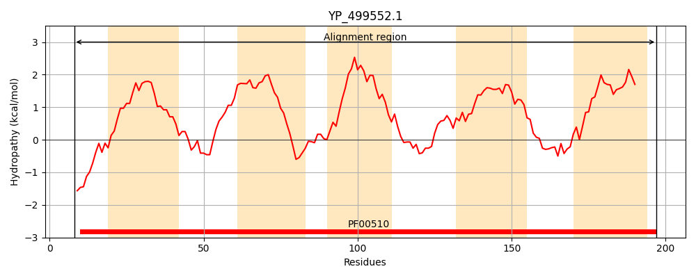
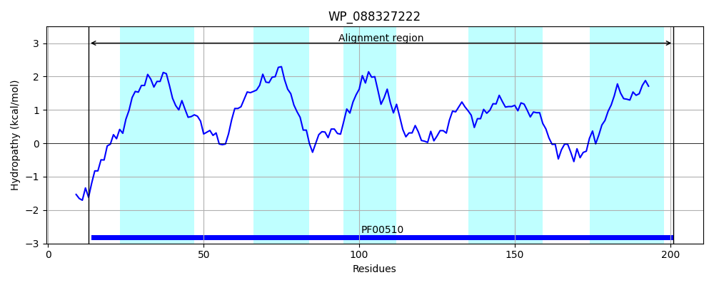
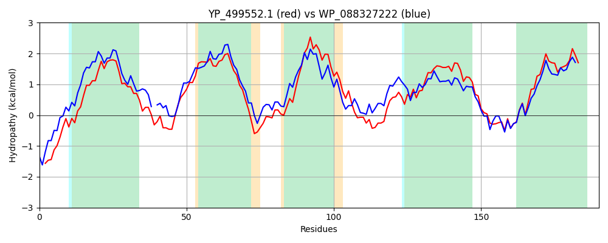

Hit Accession: WP_088327222
Hit TCID: 3.D.4.5.2
Hit Description: gnl|BL_ORD_ID|21548 gnl|TC-DB|WP_088327222|3.D.4.5.2 cytochrome aa3 quinol oxidase subunit III [Bacillus subtilis]
Mach Len: 190
e:0.000000
Query TMS Count : 5
Hit TMS Count: 5
TMS-Overlap Score: 5.400000
Predicted Substrates:CHEBI:5584;hydron
BLAST Alignment:
Score: 543 , Bit scores: 213 bits, E-value: 6.9e-71, Alignment length: 190, Percentage identity: 54
Query: 8 IDSRTHEGELNKLGFWIFITAEFALFGTLFATLLTLQHGGDYAGKMTTELFELPLVLIMTFALLFSSYTCGIAIYYMRQEKQKLMMFWMIITLLLGLVFVGFEIYEFAHYASEGVNPTIGSYWSSFFILLGTHGCHVSLGIVWAICLLIQIQRRGLDKYNAPKLFIVSLYWHFLDVVWVFIFTAVYMIGM 197
++ ++ G LN LGFWIF+ AE LF TLFAT L++ G + ELFE+ LV+IMTF LL SS+TCGIA++ MR+ K ++ W IITLLLG FVG EI EF HY EG + ++WS FF+LLGTHG HV++GI W +LIQ+++RGL + K+FI SLYWHFLDVVW+FIFT VY++G+
Sbjct: 13 MEYQSETGRLNILGFWIFLGAEIVLFSTLFATFFVLKNR-TAGGVLPDELFEVNLVMIMTFLLLISSFTCGIAVHEMRRGNLKGVVIWTIITLLLGAGFVGCEINEFVHYVHEGAALSTSAFWSGFFVLLGTHGTHVTIGIFWITGILIQLKKRGLTPQTSSKIFISSLYWHFLDVVWIFIFTGVYLMGL 201 | Protein Hydropathy Plots: |
|---|
|  |  |
Pairwise Alignment-Hydropathy Plot:
|
|---|
|  |